Polymarket API → Stage 1 Filter (Rule Based) → Stage 2 Filter (LLM) → Supabase (DB) → Report & Dashboard

--max-events flag
Fast binary SIGNAL / NOISE on every market. Fail-open — on parse error defaults to SIGNAL so nothing slips through.
Mistral Small · temp=0.0 · batch=20Maps each market to specific tickers from the 14 holdings. Fail-closed — on parse error returns NOISE, nothing wrong written to DB.
Llama 4 Scout · temp=0.0 · batch=10Fills sentiment (Bullish/Bearish/Neutral), impact_score 1–10, and reasoning with a specific dollar figure for every signal.
Llama 4 Scout · temp=0.1 · batch=15On parse error → defaults to SIGNAL. Missing a real signal costs more than one extra Groq call. False positives are cheap.
batch=20 · temp=0.0On parse error → returns NOISE. At classification stage precision matters — nothing wrong should be written to DB. False negatives are acceptable.
batch=10 · temp=0.0Analyst clicks "Compare vs news" on any signal. Runs DDGS multi-query news search, extracts headlines with article bodies, calls Groq for Agreement/Conflict analysis and directional call. Cached 6 hours in deep_dives table to avoid redundant searches.
Keyword search across the signals DB directly from the Streamlit Signal Feed tab. Filters by question text or event title — lets the analyst quickly find specific markets without scrolling through all 280+ signals.